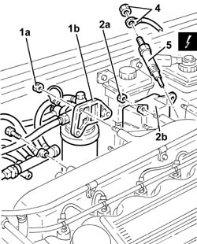
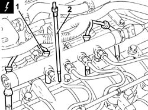
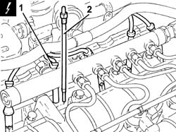

5520C10 glow plugs - r+r
- Path
- Procedures > 55 ELECTRICAL EQUIPMENT > 5520 ENGINE STARTING > 5520C cold starting system (diesel engines) > 5520C10 glow plugs - r+r
- Kind
- repair procedure (removal / refitting; the operation number is the code)
- Applies to
- engines: 1.9 JTD 16v, 2.4 JTD 10v, 2.4 JTD 20v; all production periods
- Interactive page
- https://sloeber94.github.io/elrnDB-a156/en/#/3238419
Applies to: engines: 2.4 JTD 10v; all production periods
 Removing
Removing
 Refitting
RefittingDisconnect the battery negative (-) terminal.
 | Name | Connector |
|---|---|---|
- | Battery |
1. Undo nuts (1a) and move fuel filter assembly (1b) away from the intake manifold.
2. Undo nuts (2a) and move oil vapour separator (2b) away from the intake manifold.
3. Undo the bolts (3a) and move the fuel return manifold pipe (3b) aside.
4. Disconnect the electrical leads from the heater plugs.
5. Undo and remove the heater plugs.
| Name | Connector |
|---|---|---|
- | Heater plug |

Applies to: engines: 2.4 JTD 10v; all production periods
Refitting
RemovingFit the glow plugs and tighten them to torque.
 | Fastening | Component | Ø | Value (daNm) |
|---|---|---|---|---|
- | - | GLOW PLUGS | M12 | 1.3 - 1.6 |
Connect the electrical leads to the heater plugs.
Place the fuel return manifold pipe back in its housign and secure it using the bolts.
Place the oil vapour separator back in its housing and fix it using the bolts.
Place the fuel filter back in its housing and secure with the nuts.
Connect the negative (-) battery terminal
Applies to: engines: 1.9 JTD 16v; all production periods
Removing
RefittingProceed with removal 1016A10 sound-proofing cover - r + r .
Ensure that the ignition key is in the OFF position, then disconnect the negative battery terminal (-).
| Name | Connector |
|---|---|---|
- | Battery |
1. Disconnect the electrical connections from the heater plugs.
| Name | Connector |
|---|---|---|
1 | Heater plug |
2. Undo and remove the glow plugs.

Applies to: engines: 1.9 JTD 16v; all production periods
Refitting
RemovingPlace the glow plugs back in their housings and tighten them to the recommended torque.
| Fastening | Component | Ø | Value (daNm) |
|---|---|---|---|---|
- | - | GLOW PLUGS | M9 | (Cylinder head side) 0.7 ÷ 0.9 |
Connect the electrical connections to the heater plugs.
Proceed with refitting 1016A10 sound-proofing cover - r + r .
Connect the negative (-) battery terminal
Applies to: engines: 2.4 JTD 20v; all production periods
Removing
RefittingEnsure that the ignition key is in the OFF position, then disconnect the negative battery terminal (-).
| Name | Connector |
|---|---|---|
- | Battery |
Proceed with removal 1016A10 sound-proofing cover - r + r .
1. Disconnect the electrical connections from the heater plugs.
| Name | Connector |
|---|---|---|
1 | Heater plug |
2. Undo and remove the glow plugs.

Applies to: engines: 2.4 JTD 20v; all production periods
Refitting
RemovingPlace the glow plugs back in their housings and tighten them to the recommended torque.
| Fastening | Component | Ø | Value (daNm) |
|---|---|---|---|---|
- | - | - | - | - |
Connect the electrical connections to the heater plugs.
Proceed with refitting 1016A10 sound-proofing cover - r + r .
Connect the negative (-) battery terminal.